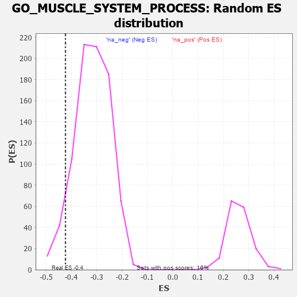

| | | Dataset | 7d |
| Phenotype | NoPhenotypeAvailable |
| Upregulated in class | na_neg |
| GeneSet | GO_MUSCLE_SYSTEM_PROCESS |
| Enrichment Score (ES) | -0.42355472 |
| Normalized Enrichment Score (NES) | -1.3412039 |
| Nominal p-value | 0.06317044 |
| FDR q-value | 0.42229244 |
| FWER p-Value | 1.0 |
Table: GSEA Results Summary
 Fig 1: Enrichment plot: GO_MUSCLE_SYSTEM_PROCESS
Fig 1: Enrichment plot: GO_MUSCLE_SYSTEM_PROCESS
Profile of the Running ES Score & Positions of GeneSet Members on the Rank Ordered List
| PROBE | GENE SYMBOL | GENE_TITLE | RANK IN GENE LIST | RANK METRIC SCORE | RUNNING ES | CORE ENRICHMENT | | 1 | CSRP3 | | | 161 | 1.186 | 0.0072 | No |
| 2 | SMAD5 | | | 231 | 0.979 | 0.0212 | No |
| 3 | TBX20 | | | 267 | 0.880 | 0.0372 | No |
| 4 | TNNC2 | | | 315 | 0.795 | 0.0497 | No |
| 5 | GSK3A | | | 351 | 0.745 | 0.0626 | No |
| 6 | MYOD1 | | | 504 | 0.628 | 0.0580 | No |
| 7 | SRF | | | 542 | 0.615 | 0.0676 | No |
| 8 | SETD3 | | | 754 | 0.544 | 0.0535 | No |
| 9 | GLRX3 | | | 813 | 0.529 | 0.0584 | No |
| 10 | MEF2C | | | 1054 | 0.473 | 0.0391 | No |
| 11 | P2RY1 | | | 1416 | 0.407 | 0.0028 | No |
| 12 | SLMAP | | | 1744 | 0.346 | -0.0306 | No |
| 13 | GATA4 | | | 1837 | 0.330 | -0.0345 | No |
| 14 | SMAD4 | | | 1860 | 0.326 | -0.0298 | No |
| 15 | SNTB1 | | | 2767 | 0.188 | -0.1401 | No |
| 16 | DAPK3 | | | 2880 | 0.169 | -0.1504 | No |
| 17 | TAZ | | | 2933 | 0.161 | -0.1532 | No |
| 18 | TLN1 | | | 3030 | 0.145 | -0.1620 | No |
| 19 | CTDP1 | | | 3279 | 0.109 | -0.1909 | No |
| 20 | SMAD3 | | | 3303 | 0.105 | -0.1914 | No |
| 21 | PARP2 | | | 3316 | 0.103 | -0.1905 | No |
| 22 | PDE9A | | | 3360 | 0.095 | -0.1937 | No |
| 23 | SMAD7 | | | 3369 | 0.093 | -0.1926 | No |
| 24 | SYNM | | | 3498 | 0.078 | -0.2070 | No |
| 25 | PIN1 | | | 3543 | 0.069 | -0.2109 | No |
| 26 | GLRA1 | | | 3957 | 0.001 | -0.2632 | No |
| 27 | PARP1 | | | 4014 | -0.010 | -0.2701 | No |
| 28 | PDE4B | | | 4089 | -0.022 | -0.2789 | No |
| 29 | MTOR | | | 4114 | -0.025 | -0.2814 | No |
| 30 | PLCE1 | | | 4127 | -0.028 | -0.2823 | No |
| 31 | STAC | | | 4327 | -0.064 | -0.3060 | No |
| 32 | ADRB2 | | | 4352 | -0.068 | -0.3074 | No |
| 33 | GRIP2 | | | 4372 | -0.071 | -0.3082 | No |
| 34 | MEF2A | | | 4499 | -0.095 | -0.3219 | No |
| 35 | NMUR2 | | | 4646 | -0.127 | -0.3375 | No |
| 36 | MYLK | | | 4651 | -0.128 | -0.3350 | No |
| 37 | CNN1 | | | 4727 | -0.144 | -0.3411 | No |
| 38 | P2RX4 | | | 4813 | -0.161 | -0.3481 | No |
| 39 | GATM | | | 4858 | -0.168 | -0.3498 | No |
| 40 | DLG1 | | | 4860 | -0.169 | -0.3460 | No |
| 41 | KLF4 | | | 5005 | -0.198 | -0.3596 | No |
| 42 | DRD2 | | | 5088 | -0.221 | -0.3649 | No |
| 43 | SCN1A | | | 5260 | -0.261 | -0.3804 | No |
| 44 | NPY2R | | | 5331 | -0.281 | -0.3828 | No |
| 45 | ACTN3 | | | 5486 | -0.315 | -0.3950 | No |
| 46 | SPHK1 | | | 5576 | -0.339 | -0.3984 | No |
| 47 | G6PD | | | 5638 | -0.358 | -0.3978 | No |
| 48 | ADA | | | 5798 | -0.405 | -0.4085 | No |
| 49 | KCNQ1 | | | 5918 | -0.441 | -0.4133 | Yes |
| 50 | ACTN2 | | | 5960 | -0.458 | -0.4078 | Yes |
| 51 | TPM2 | | | 5970 | -0.460 | -0.3983 | Yes |
| 52 | STAC2 | | | 5987 | -0.466 | -0.3895 | Yes |
| 53 | TRPC3 | | | 6035 | -0.483 | -0.3842 | Yes |
| 54 | ROCK1 | | | 6152 | -0.520 | -0.3868 | Yes |
| 55 | TPM1 | | | 6226 | -0.545 | -0.3834 | Yes |
| 56 | HSBP1 | | | 6273 | -0.562 | -0.3761 | Yes |
| 57 | GALR2 | | | 6355 | -0.599 | -0.3725 | Yes |
| 58 | BBS2 | | | 6383 | -0.608 | -0.3618 | Yes |
| 59 | TRPM4 | | | 6390 | -0.612 | -0.3483 | Yes |
| 60 | DYSF | | | 6481 | -0.654 | -0.3445 | Yes |
| 61 | SMTN | | | 6510 | -0.666 | -0.3326 | Yes |
| 62 | PAK1 | | | 6691 | -0.757 | -0.3378 | Yes |
| 63 | NMUR1 | | | 6821 | -0.828 | -0.3349 | Yes |
| 64 | MYH11 | | | 6905 | -0.870 | -0.3251 | Yes |
| 65 | GHSR | | | 6937 | -0.894 | -0.3083 | Yes |
| 66 | SCN4A | | | 6955 | -0.910 | -0.2893 | Yes |
| 67 | HCN4 | | | 7260 | -1.134 | -0.3014 | Yes |
| 68 | CDK9 | | | 7266 | -1.138 | -0.2756 | Yes |
| 69 | ANK2 | | | 7298 | -1.170 | -0.2523 | Yes |
| 70 | GPD1L | | | 7343 | -1.215 | -0.2297 | Yes |
| 71 | CALM1 | | | 7567 | -1.499 | -0.2230 | Yes |
| 72 | KCNN2 | | | 7629 | -1.611 | -0.1933 | Yes |
| 73 | PDE4D | | | 7764 | -1.944 | -0.1651 | Yes |
| 74 | CALM3 | | | 7869 | -2.525 | -0.1195 | Yes |
| 75 | CAV3 | | | 7896 | -2.739 | -0.0592 | Yes |
| 76 | PI16 | | | 7914 | -2.948 | 0.0072 | Yes |
Table: GSEA details [plain text format]

Fig 2: GO_MUSCLE_SYSTEM_PROCESS: Random ES distribution
Gene set null distribution of ES for GO_MUSCLE_SYSTEM_PROCESS